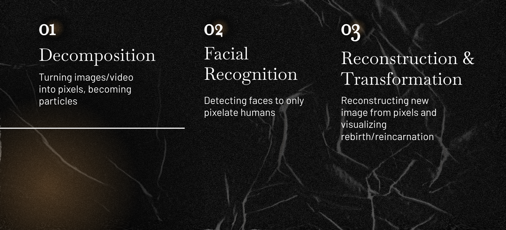

Visualizing Impermanence
GSD 6483: Christina Wong & Hannah Nguyen
Design Question
How do we show and embody the feeling of remaking oneself during reincarnation?
Artist Manifesto
Our bodies in their solid state makes it difficult to imagine transcendence or the concept of reincarnation. Through the discretization of one’s face, we hope to create the experience of being temporary: where our facial features don’t have a fixed position, don’t have a fixed time, and can morph into the background or into another person’s face. With pixels that make up our faces moving around in an air-like state, we can emphasize the impermanence of human beings, highlighting the fact that the face we see could’ve been anyone or anything else. Inspired by Buddhism and reincarnation, we hope to help viewers visualize their impermanence and accept what it means to no longer exist and simply be a shell for all the lives passing through.
Project Video
Prototype
Making Process
Final Visualizations